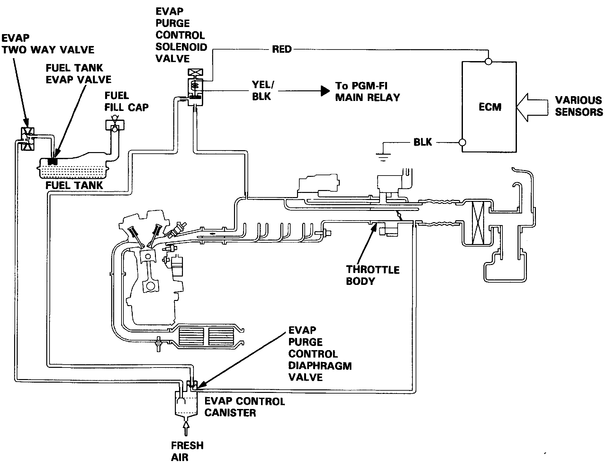

Evaporative Emissions System: Description and Operation
EVAP System Description:

PURPOSE
The evaporative emission controls are designed to minimize the amount of fuel vapor escaping to the atmosphere.
OPERATION
The evaporative emission system routes hydrocarbon (HC) vapors into the intake manifold for combustion when the vehicle is at normal operating temperature. The evaporative emissions are drawn into the intake manifold when the vehicle is at cruising speeds and normal operating temperature.